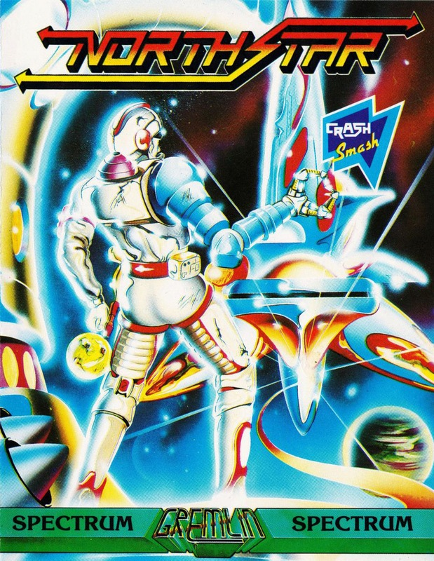
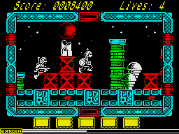
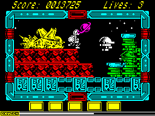
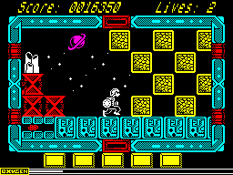

Northstar


{kind=link}

| Publisher: | Gremlin Graphics |
| Price: | £7.99 cassette, 12.99 disk |
| Year: | 1988 |
| Source: | CRASH, Issue 50 |

Orbiting Earth, surrounded by mystery, is the largest space station ever conceived. Built to solve problems of overpopulation and starvation on our planet, the vast construction was nearing completion when Earth lost all contact with it — and in Northstar you are sent to investigate the silent space ark.

tune: Northstar
But aliens, scheming to destroy human existence with their devastating weapon of predictability, have occupied the station. You must eliminate the hostile forces, complete each of the levels of the space station, and reactivate the life-support system — that is, if any of the human staff are left to make use of it.

Of course you carry a weapon, a short-distance lance, and earn points for destroying aliens — patience and quick firing are important. And you can bound over the obstacles that block your path.
To help you survive the rigours of space. you have been equipped with implanted oxygen converters, and an onscreen indicator shows how much breathable gas remains. If it falls to zero one of your four lives is lost, and you are no closer to solving the strange and dangerous problem of this eerie space station.
CRITICISM

“Northstar is really good and had me hooked in minutes. The graphics are superb, with loads of colour used to excellent effect, and brilliant characters. And the highlight of the fine sound is a synthesised tune on the title screen with the novelty of varying volume, fading bits and everything! There’s load of playability and an addictive challenge too.”
MIKE ... 90%
“Northstar is very much in the Exolon mould, so it’s very playable and addictive. The graphics are tremendous, with beautifully compact animation on all the characters and detailed, colourful and unusual backdrops. And you don’t notice how small the playing area is, because there’s such a mass of detail: for example, there are clouds of dust when your character skids, and your weapon is an extendable claw which needs to be controlled rather than a gun spraying bullets. It all contributes to the unearthly atmosphere. The presentation is equally excellent: the title screen is superb, and the strange music fits the unusual atmosphere well. The gameplay is excellent: it’s not so much a question of furious blasting as of timing and strategy combined with killing. Northstar strikes a balance between frustration and addictivity, and it’s a compelling and successful game.”
GORDON ... 91%
“Northstar looks simple but it’s surprisingly addictive. There’s not much colour, but the screen is quite effective and the gameplay provides a lively all-action arcade adventure with plenty of opportunity for the death and destruction of the alien horde. (Running around jumping over barriers and biffing aliens with my hydraulic arm reminded me of school athletics!) Northstar is very playable and exciting — all it lacks is a rough tough tune.”
NATHAN ... 90%
COMMENTS
| Joysticks: | Cursor, Kempston, Sinclair |
| Graphics: | Superbly-designed characters and a fantastic use of colour, complemented by attractive animation |
| Sound: | Atmospheric synthesised tune and attractive spot effects |
| General rating: | One of the best walk’n’whacks we’ve seen, colourful and detailed as well as addictive and playable |
| Presentation: | 93% |
| Graphics: | 88% |
| Playability: | 91% |
| Addictive qualities: | 90% |
| Overall: | 90% |